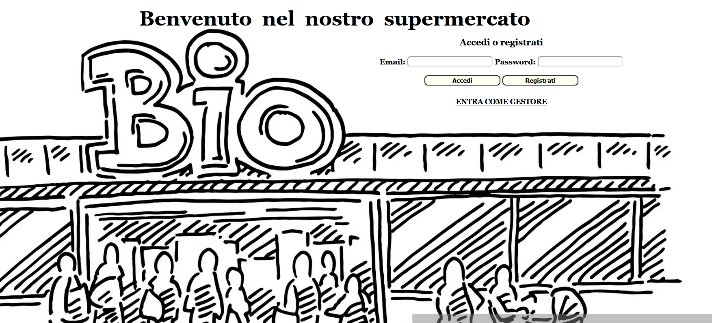
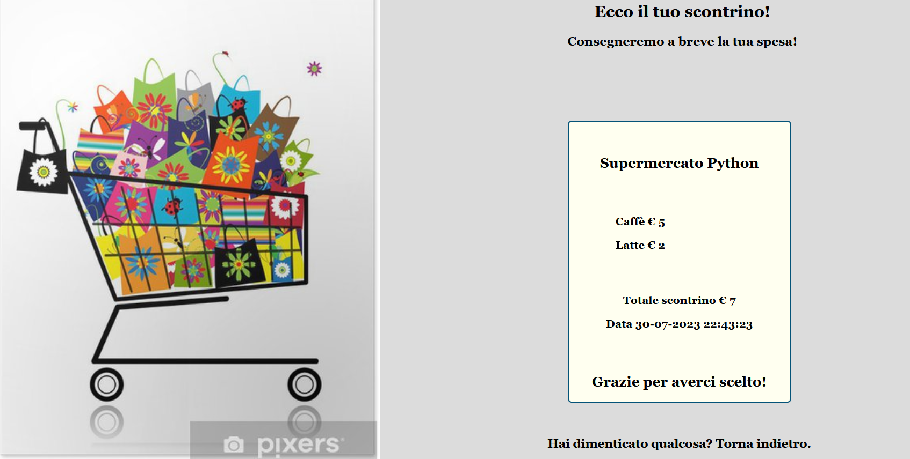
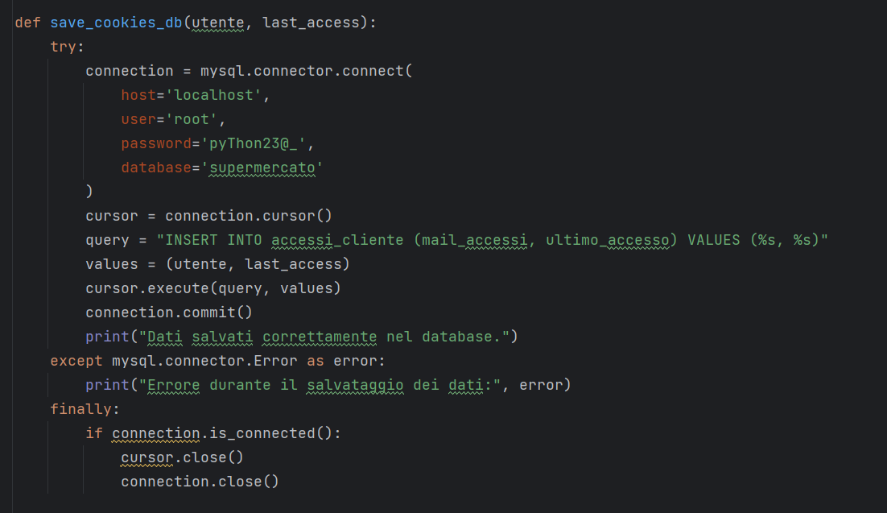
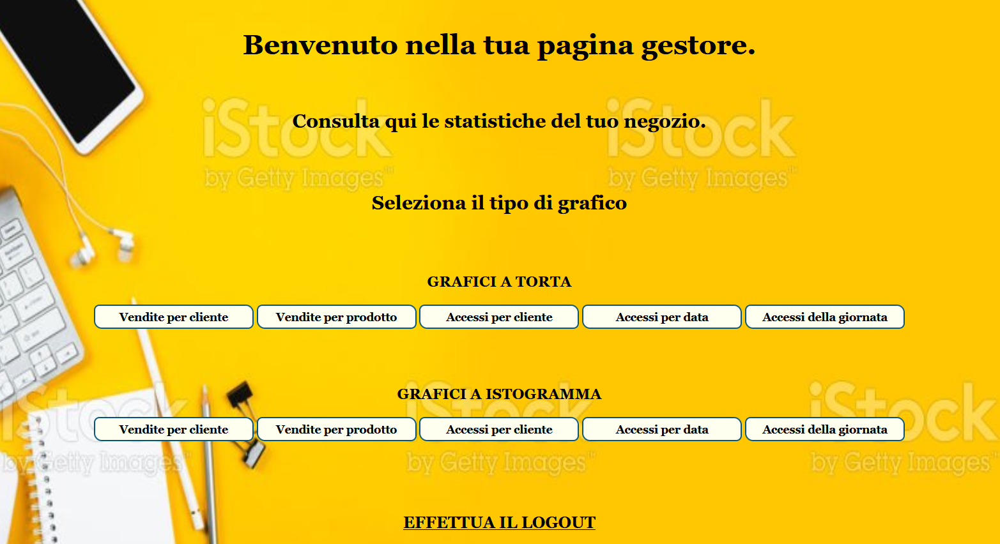
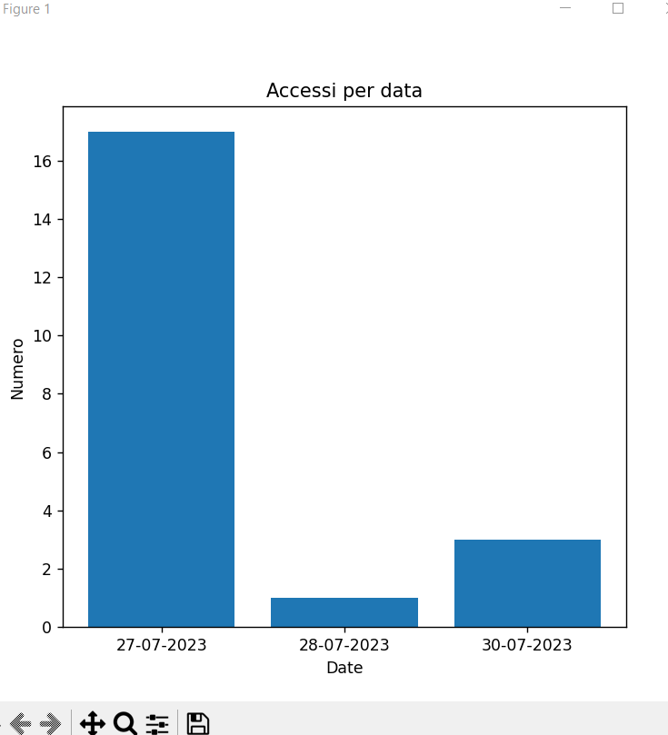
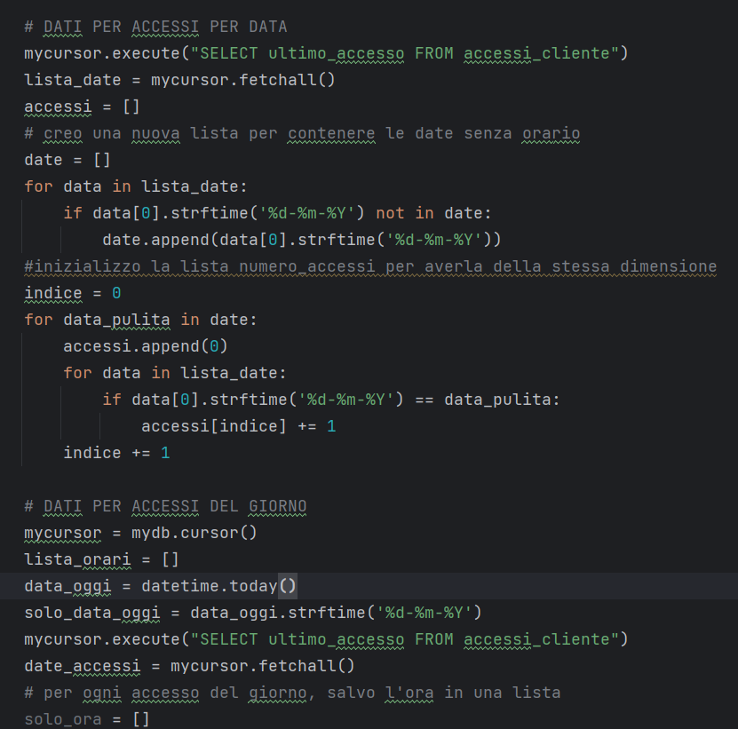
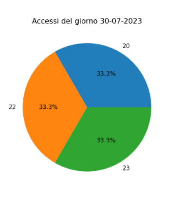

Il progetto gestisce gli acquisti online di un supermercato ed è suddiviso in sezione
cliente e sezione gestore.
Il cliente, dopo aver effettuato il login o essersi registrato, consulta
l'elenco dei prodotti categoria per categoria tramite una combo selection e li inserisce nel carrello.
Confermando l'acquisto viene stampato lo scontrino contenente l'elenco dei prodotti, il prezzo parziale e
totale, la data d'acquisto.


I dati di accesso vengono salvati su un database MySql contenente data di accesso e id utente,
questi verranno successivamente analizzati nella pagina statistiche.
Su un secondo database vengono
archiviati i prodotti acquistati, l'id utente e la data di acquisto.

Nella sua pagina dedicata, il gestore può stampare le statistiche di vendita scegliendo tra vari tipi di statistiche e di grafici, quali per cliente, per prodotto, accessi per data ed accessi del giorno.



